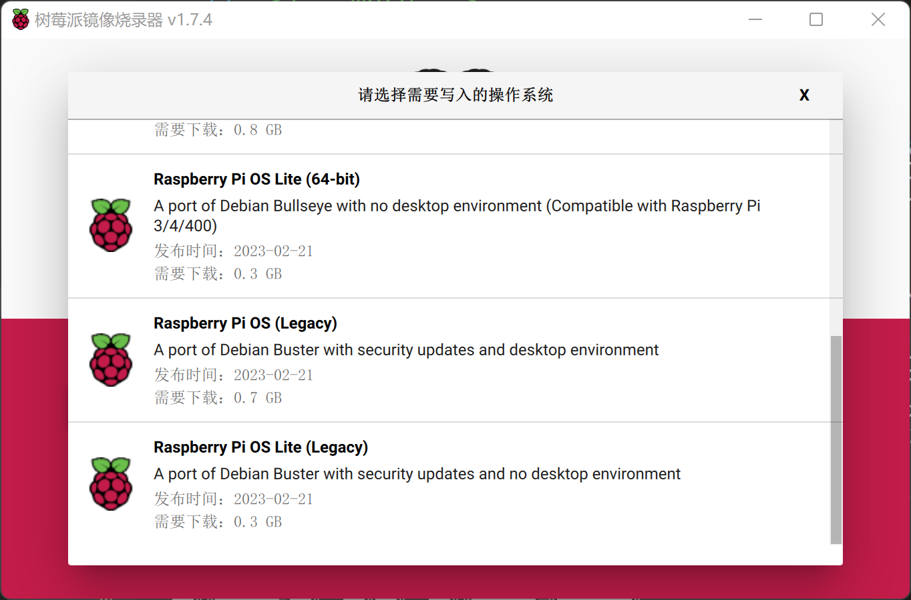

树莓派服务器
- 树莓派 4B 8G RAM
- 64G tf 卡
- 64G U 盘
- 树莓派操作系统:
Raspberry Pi OS Lite (64-bit)
安装操作系统
从 https://www.raspberrypi.org/software/ 下载 树莓派镜像烧录器 Raspberry Pi Imager. 建议安装最新版 (例如 v1.7.4 及以上版本, 功能更加丰富).
运行
Raspberry Pi Imager, 选择需要写入的操作系统, 例如:Raspberry Pi OS (others)->Raspberry Pi OS Lite (64-bit), 该版本没有桌面环境, 更加轻量.将 64G tf 卡 通过读卡器插入电脑, 并在
Raspberry Pi Imager中选择该 tf 卡.点击
Raspberry Pi Imager右下角齿轮图标, 对镜像进行配置- 默认情况下, 该工具会读取本机的相关配置, 填入上图界面;
- 其中主机名可以用于在不知道 ip 地址的情况下进行 ssh 连接登录;
- 设置用户名和密码以便登录, 官方系统镜像默认的用户名和密码是 pi 和 raspberry, 这里可以自己设置;
- 配置 WiFi 名和密码, 以便系统上电后能够自动连接 WiFi (以前需要手动在 tf 卡 的
boot/目录下新建wpa_supplicant.conf文件以写入 WiFi 配置信息, 现在新版的烧录工具提供了这个功能, 配置更加方便)
点击 烧录, 等待系统镜像烧录完成并验证通过;
将 tf 卡 插入树莓派卡槽, 开机, 等待其连接上网络后(关于树莓派是否联网成功, 可以去路由器管理界面查看), 在电脑上通过 ssh 连接树莓派, 然后以用户名和密码登录. 默认为 pi 和 raspberry
ssh 登录 树莓派 1
ssh pi@raspberrypi.local
补充 : 某次 Windows 系统升级以后发现无法通过
ssh pi@raspberrypi.local登录到树莓派.1
ssh: Could not resolve hostname raspberrypi.local.
windows 安装 Bonjour 并重启后解决了该问题.
如果无法进入路由器管理界面, 可以通过如下方式获得树莓派的 ip 地址
ping
1
2
3
4
5
6
7
8
9
10
11
12> ping -4 raspberrypi.local
正在 Ping raspberrypi.local [192.168.1.102] 具有 32 字节的数据:
来自 192.168.1.102 的回复: 字节 =32 时间 =2ms TTL=64
来自 192.168.1.102 的回复: 字节 =32 时间 =2ms TTL=64
来自 192.168.1.102 的回复: 字节 =32 时间 =2ms TTL=64
来自 192.168.1.102 的回复: 字节 =32 时间 =3ms TTL=64
192.168.1.102 的 Ping 统计信息:
数据包: 已发送 = 4，已接收 = 4，丢失 = 0 (0% 丢失)，
往返行程的估计时间(以毫秒为单位):
最短 = 2ms，最长 = 3ms，平均 = 2ms通过 PortScan、Advanced IP Scanner 等工具进行扫描
1
raspberrypi 192.168.1.102 E4:5F:01:2F:5C:7B
已知
MAC地址:通过 python 脚本读取 1
2
3
4
5
6import os
res = os.popen('arp -a').readlines()
#res = os.popen("arp -a")
for I in res:
if "e4-5f-01-2f-5c-7b" in I:
print(I[:18])
固定 IP
如果能进入路由器管理界面, 则可以将树莓派的 IP 和 MAC 地址进行绑定;
否则可以 ssh 登录树莓派后查看当前 ip, 并将其设置为静态 IP, 以便后续远程访问.
1
2
3
4
5
6
7
8
9
10
11
12
13
14pi@raspberrypi:~ $ ifconfig
...
wlan0: flags=4163<UP,BROADCAST,RUNNING,MULTICAST> mtu 1500
inet 192.168.1.102 netmask 255.255.255.0 broadcast 192.168.1.255
inet6 fe80::34a2:1523:4b93:54a0 prefixlen 64 scopeid 0x20<link>
ether e4:5f:01:2f:5c:7b txqueuelen 1000 (Ethernet)
RX packets 10016 bytes 940972 (918.9 KiB)
RX errors 0 dropped 0 overruns 0 frame 0
TX packets 9713 bytes 5461476 (5.2 MiB)
TX errors 0 dropped 0 overruns 0 carrier 0 collisions 0
# 当前的无线网 wlan0 的 ip 是 inet 192.168.1.102
pi@raspberrypi:~ $ sudo vi /etc/dhcpcd.conf # 编辑配置文件在 /etc/dhcpcd.conf 文件底部添加如下配置：
1
2
3
4
5interface wlan0 #网卡名
static ip_address=192.168.1.102/24 #ip/netmask,24 表示掩码为前 24bit
static routers=192.168.1.1
static domain_name_servers=192.168.1.1保存, 关闭文件, 重启系统
1
2pi@raspberrypi:~ $ sudo reboot #重启系统
$ ssh pi@192.168.1.102 # 重新通过 ip 地址登录
更换国内的软件源: 使用如下指令对两个文件进行全局替换 (
sed是linux下的流编辑器)1
2
3pi@raspberrypi:~ $ sudo sed -i 's#://raspbian.raspberrypi.org#s://mirrors.tuna.tsinghua.edu.cn/raspbian#g' /etc/apt/sources.list
pi@raspberrypi:~ $ sudo sed -i 's#://archive.raspberrypi.org/debian#s://mirrors.tuna.tsinghua.edu.cn/raspberrypi#g' /etc/apt/sources.list.d/raspi.list
pi@raspberrypi:~ $ sudo apt update
参考
挂载 U 盘
由于 ntfs 文件系统格式同时兼容 linux 和 windows，先将 U 盘插在 windows 系统中，格式化为 ntfs 格式, 设置盘符为 BAK, 然后插入树莓派.
查看设备名: 执行
sudo fdisk -l后从最后一行可以看到该 U 盘为/dev/sda1(如果不确定, 可以把 U 盘拔出再执行一次看看少了哪个设备)1
2
3
4
5
6
7
8
9
10
11
12
13
14
15
16
17pi@raspberrypi:~ $ sudo fdisk -l
...
Device Boot Start End Sectors Size Id Type
/dev/mmcblk0p1 8192 532479 524288 256M c W95 FAT32 (LBA)
/dev/mmcblk0p2 532480 124735487 124203008 59.2G 83 Linux
Disk /dev/sda: 57.3 GiB, 61530439680 bytes, 120176640 sectors
Disk model: SanDisk 3.2Gen1
Units: sectors of 1 * 512 = 512 bytes
Sector size (logical/physical): 512 bytes / 512 bytes
I/O size (minimum/optimal): 512 bytes / 512 bytes
Disklabel type: dos
Disk identifier: 0x69ac9345
Device Boot Start End Sectors Size Id Type
/dev/sda1 32 120176639 120176608 57.3G 7 HPFS/NTFS/exFAT挂载 U 盘: 执行如下指令, 可以将 U 盘挂载到
/media/udisk/路径下, 并且看到该 U 盘盘符为BAK, UUID=1AA60334A60310451
2
3
4
5
6
7
8
9pi@raspberrypi:~ $ sudo mkdir /media/udisk/ # 创建挂载点
pi@raspberrypi:~ $ sudo mount /dev/sda1 /media/udisk/ # 挂载
pi@raspberrypi:~ $ lsblk -f # 查看 UUID
NAME FSTYPE FSVER LABEL UUID FSAVAIL FSUSE% MOUNTPOINT
sda
└─sda1 ntfs BAK 1AA60334A6031045 57.2G 0% /media/udisk
mmcblk0
├─mmcblk0p1 vfat FAT32 bootfs 37CA-39EC 224.4M 12% /boot
└─mmcblk0p2 ext4 1.0 rootfs a4af13c6-d165-4cbd-a9f6-c961fef8255d 52.5G 6% /更改权限
sudo chmod 777 /media/udisk/设置开机自动挂载
1
2
3
4
5$ sudo vi /etc/fstab
# 添加一行:
UUID=1AA60334A6031045 /media/udisk ntfs defaults,nofail 0 0
# 注意这里的 `nofail` 选项是必须的，以确保在未插入 U 盘时，系统可以正常启动
$ sudo mount -a
Pi Dashboard 仪表盘
Pi Dashboard (Pi 仪表盘) 是一个开源的 IoT 设备监控工具，目前主要针对树莓派平台，也尽可能兼容其他类树莓派硬件产品。你只需要在树莓派上安装好 PHP 服务器环境，即可方便的部署一个 Pi 仪表盘，通过炫酷的 WebUI 来监控树莓派的状态！
安装 docker
通过脚本安装 docker
1
pi@raspberrypi:~ $ curl -sSL https://get.docker.com | sh
终端输出 >folded 1
2
3
4
5
6
7
8
9
10
11
12
13
14
15
16
17
18
19
20
21
22
23
24
25
26
27
28
29
30
31
32
33
34
35
36
37
38
39
40
41
42
43
44
45
46
47
48
49
50
51
52
53
54
55
56
57
58
59# Executing docker install script, commit: 7cae5f8b0decc17d6571f9f52eb840fbc13b2737
+ sudo -E sh -c apt-get update -qq >/dev/null
+ sudo -E sh -c DEBIAN_FRONTEND=noninteractive apt-get install -y -qq apt-transport-https ca-certificates curl >/dev/null
+ sudo -E sh -c curl -fsSL "https://download.docker.com/linux/raspbian/gpg" | apt-key add -qq - >/dev/null
Warning: apt-key output should not be parsed (stdout is not a terminal)
+ sudo -E sh -c echo "deb [arch=armhf] https://download.docker.com/linux/raspbian buster stable" > /etc/apt/sources.list.d/docker.list
+ sudo -E sh -c apt-get update -qq >/dev/null
+ [-n]
+ sudo -E sh -c apt-get install -y -qq --no-install-recommends docker-ce >/dev/null
+ [-n 1]
+ sudo -E sh -c DEBIAN_FRONTEND=noninteractive apt-get install -y -qq docker-ce-rootless-extras >/dev/null
+ sudo -E sh -c docker version
Client: Docker Engine - Community
Version: 20.10.7
API version: 1.41
Go version: go1.13.15
Git commit: f0df350
Built: Wed Jun 2 11:57:27 2021
OS/Arch: linux/arm
Context: default
Experimental: true
Server: Docker Engine - Community
Engine:
Version: 20.10.7
API version: 1.41 (minimum version 1.12)
Go version: go1.13.15
Git commit: b0f5bc3
Built: Wed Jun 2 11:55:25 2021
OS/Arch: linux/arm
Experimental: false
containerd:
Version: 1.4.6
GitCommit: d71fcd7d8303cbf684402823e425e9dd2e99285d
runc:
Version: 1.0.0-rc95
GitCommit: b9ee9c6314599f1b4a7f497e1f1f856fe433d3b7
docker-init:
Version: 0.19.0
GitCommit: de40ad0
================================================================================
To run Docker as a non-privileged user, consider setting up the
Docker daemon in rootless mode for your user:
dockerd-rootless-setuptool.sh install
Visit https://docs.docker.com/go/rootless/ to learn about rootless mode.
To run the Docker daemon as a fully privileged service, but granting non-root
users access, refer to https://docs.docker.com/go/daemon-access/
WARNING: Access to the remote API on a privileged Docker daemon is equivalent
to root access on the host. Refer to the 'Docker daemon attack surface'
documentation for details: https://docs.docker.com/go/attack-surface/
================================================================================测试 docker
1
pi@raspberrypi:~ $ sudo docker run hello-world
终端输出 >folded 1
2
3
4
5
6
7
8
9
10
11
12
13
14
15
16
17
18
19
20
21
22
23
24
25
26
27Unable to find image 'hello-world:latest' locally
latest: Pulling from library/hello-world
4ee5c797bcd7: Pull complete
Digest: sha256:9f6ad537c5132bcce57f7a0a20e317228d382c3cd61edae14650eec68b2b345c
Status: Downloaded newer image for hello-world:latest
Hello from Docker!
This message shows that your installation appears to be working correctly.
To generate this message, Docker took the following steps:
1. The Docker client contacted the Docker daemon.
2. The Docker daemon pulled the "hello-world" image from the Docker Hub.
(arm32v7)
3. The Docker daemon created a new container from that image which runs the
executable that produces the output you are currently reading.
4. The Docker daemon streamed that output to the Docker client, which sent it
to your terminal.
To try something more ambitious, you can run an Ubuntu container with:
$ docker run -it ubuntu bash
Share images, automate workflows, and more with a free Docker ID:
https://hub.docker.com/
For more examples and ideas, visit:
https://docs.docker.com/get-started/设置开机自启动
1
2pi@raspberrypi:~ $ sudo systemctl enable docker #设置 Docker 开机启动
pi@raspberrypi:~ $ sudo systemctl start docker #开启 Docker 服务
安装 Pi Dashboard
执行如下指令自动下载 pi dashboard 的 docker 镜像, 并运行.
1
pi@raspberrypi:~ $ sudo docker run -d --name docker-pi-dashboard -e 'LISTEN=1024' --net=host ecat/docker-pi-dashboard
终端输出 >folded 1
2
3
4
5
6
7
8
9
10
11
12
13
14
15
16
17
18
19
20
21
22
23
24Unable to find image 'ecat/docker-pi-dashboard:latest' locally
latest: Pulling from ecat/docker-pi-dashboard
Image docker.io/ecat/docker-pi-dashboard:latest uses outdated schema1 manifest format. Please upgrade to a schema2 image for better future compatibility. More information at https://docs.docker.com/registry/spec/deprecated-schema-v1/
2d0dd188931a: Pull complete
03eb4021c1f6: Pull complete
442a56ac1793: Pull complete
1fa17acfedb0: Pull complete
dc8505b95ef8: Pull complete
9aadfc7b2a49: Pull complete
d2907dac28e2: Pull complete
6982fe3ac7b3: Pull complete
b21c902f6d62: Pull complete
db63bd47ba99: Pull complete
feb8bf0c4127: Pull complete
a3ed95caeb02: Pull complete
bdd6b2157199: Pull complete
b430fccb2fe8: Pull complete
fc1dedceec86: Pull complete
065cc1255f16: Pull complete
e80cede29c34: Pull complete
f0e04c584fa6: Pull complete
Digest: sha256:c5ad4e0e6176f9bc584cbee8d9734dbf6d98bc41ad60742f93107648330c7c8c
Status: Downloaded newer image for ecat/docker-pi-dashboard:latest
2a219255330e38b4b1af736b93f83a857a0f3a748176ab1b49556ab27dffa878查看镜像运行状态
1
2pi@raspberrypi:~ $ sudo docker ps | grep docker-pi-dashboard
2a219255330e ecat/docker-pi-dashboard "/usr/bin/entry.sh /…" 33 seconds ago Up 21 seconds docker-pi-dashboard浏览器访问: http://192.168.1.102:1024/ 或 http://raspberrypi.local:1024/
创建脚本, 自动重启 pi-dashboard docker 镜像
1 |
|
- 开机自启动, 将重启脚本添加到
/etc/rc.local, 默认以 root 用户执行脚本
1 | $ sudo vi /etc/rc.local |
1 |
|
搭建 Gitea 代码托管平台
安装数据库 mariadb
本来想安装 mysql-server, 但显示如下信息
1
2
3
4
5
6
7
8
9pi@raspberrypi:~ $ sudo apt install mysql-server
正在读取软件包列表... 完成
正在分析软件包的依赖关系树
正在读取状态信息... 完成
没有可用的软件包 mysql-server，但是它被其它的软件包引用了。
这可能意味着这个缺失的软件包可能已被废弃，
或者只能在其他发布源中找到
然而下列软件包会取代它：
mariadb-server-10.0MariaDB 数据库管理系统是 MySQL 的一个分支，主要由开源社区在维护，采用 GPL 授权许可。开发这个分支的原因之一是：甲骨文公司收购了 MySQL 后，有将 MySQL 闭源的潜在风险，因此社区采用分支的方式来避开这个风险。
因此可以选择安装
mariadb作为mysql的替代品, 两者大多数情况下是一致的.1
2
3$ sudo apt install mariadb-server
$ mysql -V # 查看版本
mysql Ver 15.1 Distrib 10.5.18-MariaDB, for debian-linux-gnu (aarch64) using EditLine wrapper配置数据库
1
2
3
4
5
6
7
8
9
10
11
12
13
14pi@raspberrypi:~ $ sudo mysql_secure_installation
接下来为 mysql 的 root 用户设置密码，这与操作系统的 root 用户不同.
# root 的密码: password_for_root_in_mysql
删除匿名用户, 禁止 root 用户远程登录(这不是禁止操作系统上的 root 远程登录), 删除测试数据库并访问它. 总是全部输入 Y 即可.
# root 登录数据库
pi@raspberrypi:~ $ mysql -u root -p
# 输入密码: password_for_root_in_mysql
# 创建数据库
mysql> CREATE DATABASE gitea;
# 新建用户并授予所有权限, 其密码为 `password_for_gitea_in_mysql`
mysql> GRANT ALL PRIVILEGES ON gitea.* TO 'gitea'@'localhost' IDENTIFIED BY 'password_for_gitea_in_mysql';
# 刷新权限表
mysql> FLUSH PRIVILEGES;
mysql> exit
安装 Gitea
关于用户管理可以参考 linux 下的用户管理
为 Gitea 创建一个专门的用户
git1
pi@raspberrypi:~ $ sudo adduser --disabled-login --gecos 'Gitea' git
该条命令的解释:
添加了用户git, 字段--disabled-login表示禁止该用户登录, 因此无需也无法为git用户设置密码, 该用户不能像其他用户一样使用名字密码登录.
但是root用户仍然可以切换到该用户状态下, 使用的是sudo su git命令, 其中su表示switch user. 但即使切换过来后, 由于当前用户没有密码, 所以也无法使用sudo命令.
一般在创建用户时需要输入该用户的一些个人信息,--gecos选项表示其后跟随的字符串就是该用户的个人信息, 即名为Gitea.安装
gitea1
2
3
4
5
6
7
8
9
10
11# 切换到 git 用户
pi@raspberrypi:~ $ sudo su git
git@raspberrypi:/home/pi $ cd
git@raspberrypi:~ $ mkdir gitea
git@raspberrypi:~ $ cd gitea/
git@raspberrypi:~/gitea $ wget https://dl.gitea.com/gitea/1.19.0/gitea-1.19.0-linux-arm64 -O gitea
git@raspberrypi:~/gitea $ chmod +x gitea
# 为了使得 gitea 能够随着系统启动而自启动, 为其创建一个系统服务, 然而因为 git 用户无法使用 sudo 命令, 这里需要切换回到 pi 用户下
git@raspberrypi:~ $ su pi
密码: # 输入 pi 的密码
pi@raspberrypi:~ $ sudo nano /etc/systemd/system/gitea.servicegitea.service文件内容如下:/etc/systemd/system/gitea.service 1
2
3
4
5
6
7
8
9
10
11
12
13
14
15
16
17
18
19
20
21
22
23[Unit]
Description=Gitea (Git with a cup of tea)
After=syslog.target
After=network.target
[Service]
# Modify these two values and uncomment them if you have
# repos with lots of files and get to HTTP error 500 because of that
###
# LimitMEMLOCK=infinity
# LimitNOFILE=65535
RestartSec=2s
Type=simple
User=git
Group=git
WorkingDirectory=/home/git/gitea
ExecStart=/home/git/gitea/gitea web
Restart=always
Environment=USER=git
HOME=/home/git
[Install]
WantedBy=multi-user.target启动服务
1 | pi@raspberrypi:~ $ sudo systemctl enable gitea.service |
- gitea 网站初始化
- 浏览器访问:http://192.168.1.102:3000
- 点击注册或登录, 由于是首次运行, 会弹出安装界面
- 首先是配置数据库, 选择
MySQL, 用户为gitea, 密码为前面指定的password_for_gitea_in_mysql. - 设置域名 domain 和 Application URL, 将其中的
localhost用 ip 地址替换. - 点击
Install Gitea. - 注册管理员, 如果安装时没有设置管理员信息，则目前还没有用户，点击马上注册，第一个注册的用户默认为管理员，此处选择管理员账户为：root（admin 被系统保留，无法使用）
- 只有管理员账户可以管理后台, 后续新建的账户都默认不是管理员.
- 参考
修改配置: 在 Gitea 仓库创建 release 时, 直接添加附件可能会超出文件大小限制, 因此需要修改配置
1
2$ sudo su git
$ nano ~/gitea/custom/conf/app.ini在
app.ini文件的末尾添加1
2
3
4[attachment]
ALLOWED_TYPES = "*/*"
MAX_FILES=10
MAX_SIZE=5000然后再重启 Gitea 服务即可.
1
2pi@raspberrypi:~ $ sudo systemctl stop gitea.service
pi@raspberrypi:~ $ sudo systemctl start gitea.service
搭建文件服务器
有如下可选产品
- miniserve
- chfs
- gohttpserver
备份及恢复
备份 Gitea
备份
创建脚本, 并切换到 git 用户下执行该脚本, 进行备份.
1 | $ sudo vi /usr/local/bin/auto_gitea_dump.bash # 写入的文件内容见下文 |
脚本文件内容如下:
1 |
|
将备份文件同步到 U 盘
注意: 要通过 rsync 将文件同步到其他用户下，需要保证文件夹及其下的文件都有足够的访问权限755, 递归设置权限: chmod -R 755 ${gitea_bakdir}.
首先判断外挂 U 盘文件夹是否存在, 若存在, 则通过 rsync 将${gitea_bakdir}路径下备份的文件同步到 U 盘中,U 盘中的文件也可以定期删除
创建如下脚本文件来执行该任务
1 | pi@raspberrypi:~ $ sudo vi /usr/local/bin/rsync_gitea_backup_to_udisk.bash # 脚本文件内容见下文 |
1 |
|
恢复 gitea
官方并没有提供从备份文件中恢复数据的命令, 但需要的操作就是将备份压缩包解压, 然后依次替换当前系统中的相关文件, 以及更新 mysql 数据库即可.
备份系统镜像
- 下载备份工具
1
2
3
4
5$ git clone https://github.com/nanhantianyi/rpi-backup.git
# 备份镜像文件大小约为已用空间的 1.2 倍, 注意, 若将镜像拷贝到 U 盘或其他设备, 目标设备文件系统格式必须支持大文件(>4G).
$ sudo chmod a+x ./rpi-backup/*.sh
$ rm -rf rpi-backup/.git
$ sudo mv rpi-backup /usr/local/bin - 创建备份脚本
1 | $ sudo vi /usr/local/bin/backup_system_image_to_udisk.bash # 脚本文件内容见下文 |
1 |
|
- 恢复
将镜像文件烧录到 tf 卡中, 然后插入树莓派, 等待系统启动后, ssh 连接到树莓派, 然后执行resize.sh.
1 | pi@raspberrypi:~ $ sudo rpi-backup/resize.sh # 可用空间扩展到全卡 |
定时备份
/etc/crontab 是一个隐藏的文本文件，用于执行定时任务, 该文件中预定义了几条定时任务，分别用于在每个小时、每天、每周、每月执行相应目录下的程序.
程序解析: test -x /usr/sbin/anacron || (cd / && run-parts --report /etc/cron.daily)
||表示首先执行左边的命令，若左边命令为真，则结束; 若左边命令为假，则执行右边命令.test -x [filename]: 判断若文件存在且可执行, 返回真; 否则返回假anacron: 另一个用于执行定时任务的服务, 在某些版本系统中可能没有该程序.test -x /usr/sbin/anacron || ...: 若不存在anacron则通过cron执行定时任务, 若存在, 则不执行cron.(这时定时任务要通过/etc/anacrontab文件来设置, 树莓派上默认未安装anacron)./etc/cron.daily: 定时任务的文件夹, 该文件夹下有许多可执行文件.run-parts: 依次执行指定目录下的可执行文件.
要设置树莓派定时执行备份任务, 只需在 /etc/crontab 文件中按照相应格式描述定时任务即可.
具体格式如下
1 | pi@raspberrypi:~ $ cat /etc/crontab |
添加定时任务
1 | pi@raspberrypi:~ $ sudo sh -c 'echo "00 04 * * * git test -x /usr/local/bin/auto_gitea_dump.bash && /usr/local/bin/auto_gitea_dump.bash" >> /etc/crontab' # 每天 04:10 执行一次 gitea 备份 |